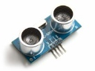

Objetivo de aprendizaje
Aprender a usar un sensor de proximidad para detectar si un objeto está cerca y hacer que se encienda un LED o suene un buzzer (zumbador). ¡Como una alarma!
Aprender a usar un sensor de proximidad para detectar si un objeto está cerca y hacer que se encienda un LED o suene un buzzer (zumbador). ¡Como una alarma!
Es un dispositivo de entrada digital que permite detectar la presencia de un objeto cercano sin contacto físico. En educación, se usa frecuentemente para enseñar detección automática.

Tipos comunes:
üîé Pedag√≥gicamente, el sensor permite ense√±ar l√≥gica condicional basada en el entorno (entrada ‚Üí decisi√≥n ‚Üí acci√≥n).
(Velásquez y Becerra, 2023).
Funcionamiento:
Emite un pulso de ultrasonido (inaudible para el oído humano).
El sonido rebota en un objeto cercano y regresa al sensor.
El sensor mide el tiempo que tarda en regresar el eco.
Con esa información calcula la distancia con la fórmula:
Distancia=Tiempo×Velocidad del sonido/2
Sensor infrarrojo (IR)
Funcionamiento:
Emite un haz de luz infrarroja.
Si hay un objeto frente al sensor, la luz se refleja y es captada por un fotodiodo o fototransistor.
Se detecta así la presencia del objeto (pero no mide distancia precisa como el ultrasónico (Cedeño, 2025).
Obra publicada con Licencia Creative Commons Reconocimiento No comercial Compartir igual 4.0